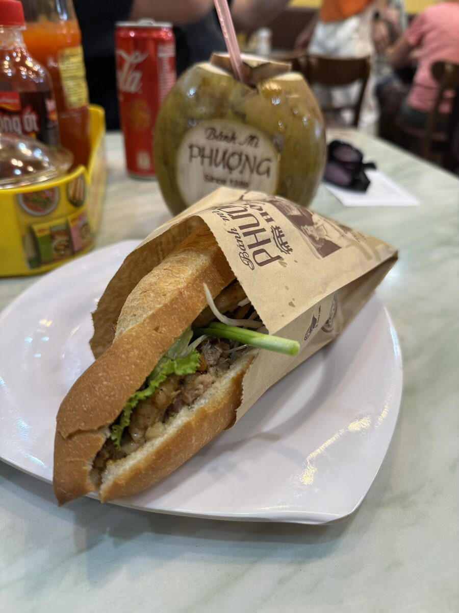
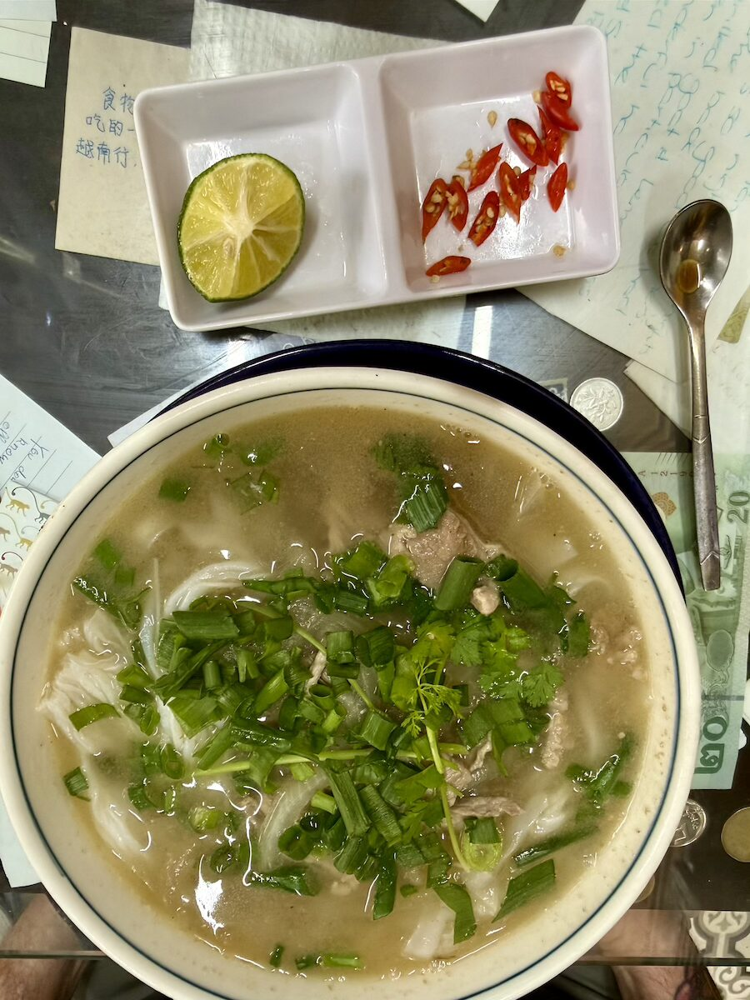
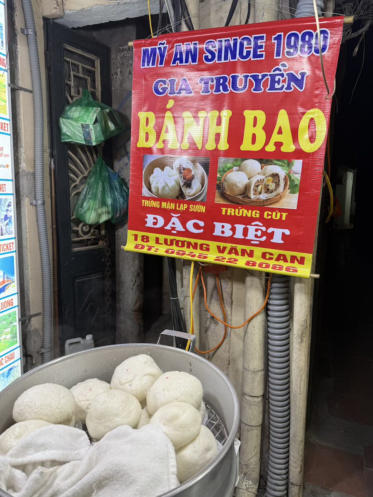
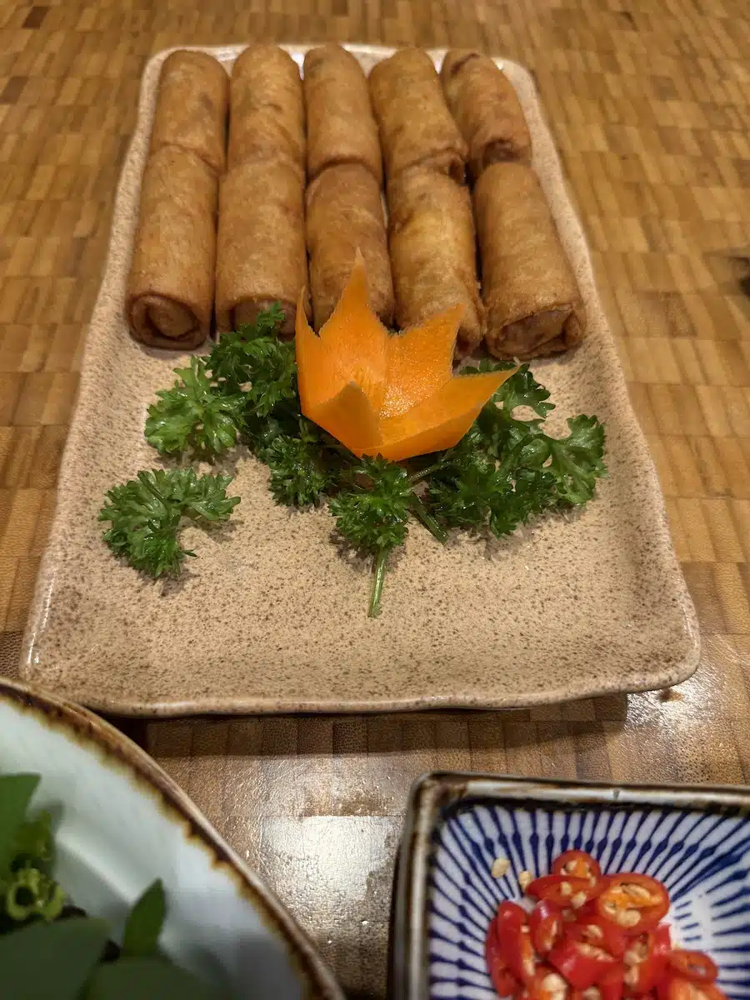
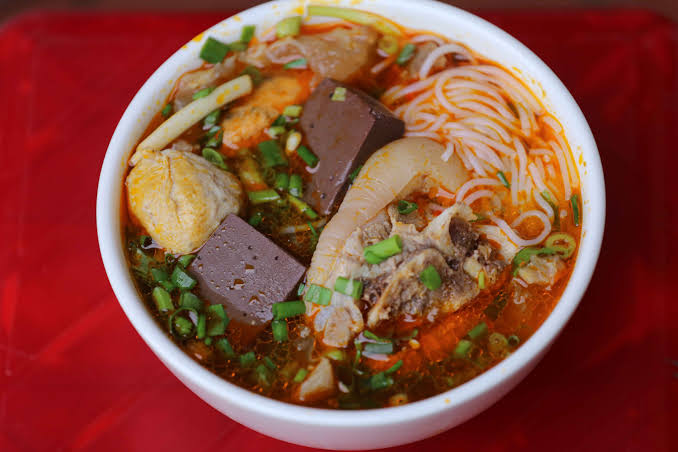
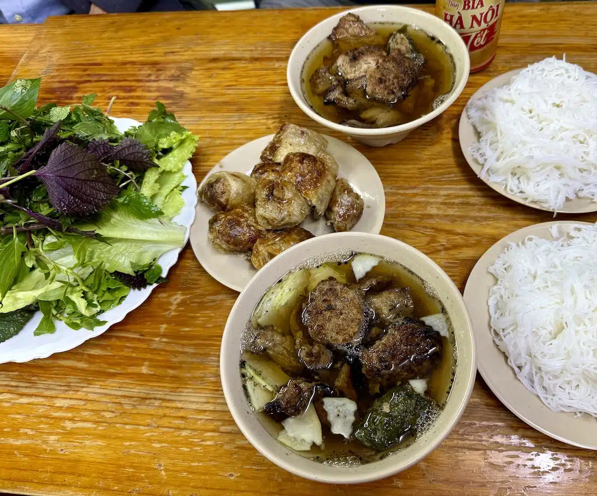
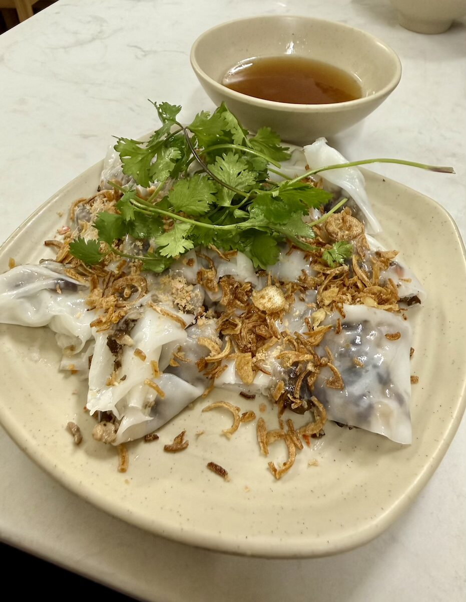

Ready to see some place of interest/h2>
List of famous attraction in Vietnam.
Banh mi is Vietnam traditional bread with slice vegetable,pork,pate,sauce and many other thing depend on the seller.


Pho is some kind of rice noodles that make in bone broth with some topping like onion,beef,etc.
One of the most walk-friendly foods in Vietnam is bao buns. These soft, pillowy steamed buns are usually filled with either pork and quail eggs or a sweet taro filling.

Fried spring rolls are probably more common and popular, and we ate a lot of these too! Usually with pork and wood ear mushrooms, but sometimes with interesting additions, like lotus seeds.

In the same vein as Pho, but with a spicy and robust broth, Bun Bo Hue hails from central Vietnam, the Imperial City.

As you walk through the streets of Hanoi, you’ll smell the sweet, smoky aroma of pork cooking on open grills. Bun cha comes in two types – Bun Cha Cham (dipping kind) and Bun Cha Chan (soup kind). My favourite was Bun Cha Chan – where you could slurp a delicious broth with fish sauce, charred pork meatballs and tranches of pork floating in it..

Freshly steamed rice paper is filled with minced pork and wood ear mushrooms, before being rolled up and served with crispy onions and coriander. Usually you get a steamed pork sausage on the side, and a fish sauce dip to dunk your rolls in. It was a textural delight, as well as a revelation on how to use pork and black mushrooms to great effect.

List of famous attraction in Vietnam.